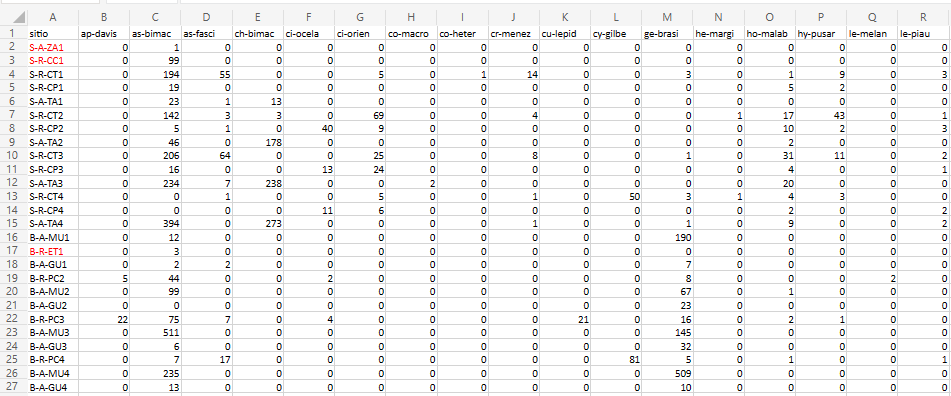

7 Bases de dados. Dados do PPBio Semiárido
Exemplos de conjunto de dados ecológicos do Programa de Pesquisa em Biodiversidade (PPBio) do Semiárido
RESUMO
Para entender a distribuição das espécies de peixes e seu uso de habitat, uma série de variáveis ambientais foram avaliadas como preditores da composição e riqueza da assembleia de peixes em sistemas aquáticos tropicais semiáridos. Nós pesquisamos a composição de espécies de assembleias de peixes em sistemas aquáticos semiáridos e estabelecemos seu grau de associação com a estrutura do habitat aquático. Os locais consistiam em trechos de riachos com fluxo de água superficial, poças temporárias isoladas e reservatórios artificiais (açudes). A amostragem de peixes foi realizada em quatro ocasiões durante as estações chuvosa (abril e junho de 2006) e seca (setembro e dezembro de 2006).
Palavras-chave: rios intermitentes, reservatórios, conservação, composição de substratos.
7.1 Sobre os dados do PPBio
Usaremos ao longo desse livro dados que fazem parte de um estudo mais amplo sobre ecologia de rios do semiárido, coletados no Programa de Pesquisa em Biodiversidade - PPBio (Veja Programa de Pesquisa em Biodiversidade – PPBio).
Nesta base de dados estão armazenadas informações sobre diversos grupos taxonômicos dstribuidos em diversas unidades amostrais (UA’s ou sítios), como peixes, macroinverbrebrados bentônicos, quironomídeos e zooplâncton, além de dados do habitat, como variáveis físicas e químicas, morfologia do habitat, composição do substrato, estrutura de habitat marginal, entre outros (FIGUEIREDO et al., 2015; MEDEIROS et al., 2010; MEDEIROS et al., 2011; MEDEIROS et al., 2024; MEDEIROS; SILVA; RAMOS, 2008). Veja a seção Arquivos disponíveis a seguir, para baixar as bases de dados para esse curso.
Parte desses dados está armazenada em planilhas de Excel ppbio**.xlsx (Figura 7.1). Essas matrizes de dados são descritas na Tabela 7.1. As planilhas ppbio**.xlsx contém vários tipos de dados arranjados em matrizes n x m que incluem dados de abundância de espécies em diferentes unidades amostrais (UA’s), dados da estrutura do habitat físico, e variáveis em escala de bacia hidrográfica, dados de contagem de indivíduos ajustados para Captura Por Unidade de Esforço (CPUE), etc (Figura 7.1).

Figura 7.1: Parte da planilha de dados brutos do PPBio.
Por exemplo, essa é a matriz bruta de dados, porque os valores ainda não foram ajustados para os valores de Captura Por Unidade de Esforço (CPUE), nem foram relativizados ou transformados. Outros tipos de arquivos existem sobre esses dados (Tabela 7.1).
Várias das espécies nessa matriz tem grande importância ecológica, como é o caso de Astyanax bimaculatus1 (Figura 7.2), que é muito comum em rios intermitentes e serve de alimento para predadores maiores (SILVA; DUARTE; MEDEIROS, 2018) como a espécie Hoplias malabaricus2 (Figura 7.3) (SILVA et al., 2010).

Figura 7.2: Astyanax bimaculatus, a espécie mais comum da matriz de dados ppbio. Peru, by Eakins, R. Fonte: https://www.fishbase.se/summary/Astianax-bimaculatus.html

Figura 7.3: Hoplias malabaricus, espécie que cresce para se tornar um importante predador. Brazil, by Roselet, F.F.G. Fonte: https://www.fishbase.se/summary/Hoplias-malabaricus.html
Outras espécies como Apareiodon hasemani3 (Figura 7.4 tem importância trófica por estar na base da cadeia alimentar, enquanto espécies da família Loricariidae, como Pseudancistrus genisetiger4 (Figura 7.5), tem importância para taxonomia.

Figura 7.4: Apareiodon sp., importante espécie bentopelágica das bacias dos rios Jaguaribe e Paraíba. Brazil, by Ramos, T.P.A. Fonte: https://www.fishbase.se/summary/Apareiodon-davisi.html

Figura 7.5: Pseudancistrus genisetiger, uma espécie endêmica das bacias hidrográfcas do nordeste. By Medeiros, E.S.F. Fonte: Arquivo pessoal
As planilhas ppbio**.xlsx contém o delineamento amostral de um dos estudos do Projeto PPBio (Figura 7.6). Nas linhas são apresentadas as abreviações dos nomes das unidades amostrais (UA’s) e nas colunas são apresentados os nomes abreviados das espécies - temos portando uma matriz comunitária (Tabela 7.1). No corpo da planilha temos os valores para o tipo de dados amostrado. Quantitativo, semi-quatitativo ou qualitativo.
Qual desses tipos de dados você acha que é apresentado na planilha?

Figura 7.6: Associação entre a planilha de dados brutos do PPBio e o delineamento amostral do estudo.
7.2 Arquivos disponíveis
A seguir, apresento uma tabela com as informações essenciais sobre as matrizes de dados que serão utilizadas ao longo deste livro (Tabela 7.1). Nela, estão descritos os diferentes tipos de matrizes, suas finalidades analíticas e o tipo de dado para cada uma delas. Essas informações servirão de referência para compreender a origem, a estrutura e o tratamento recomendado para os dados empregados nas análises subsequentes.
Você pode baixar essas matrizes clicando no link para o arquivo em .xlsx na coluna Arquivo. Ao vizualizar a matriz que deseja baixar, clique em Arquivo > Baixar > Microsoft Excel (.xlsx). Atente para a pasta onde seu computador baixa o arquivo desejado, você vai precisar dessa informação depois.
| Arquivo | Tipo de matriz | Descrição | Tipo de dados |
|---|---|---|---|
| ppbio06c-peixes.xlsx; ppbio06c-peixes.ods | Matriz comunitária | O arquivo ppbio06 traz os dados brutos que serão usados nas análises. A matriz de dados brutos contendo 26 localidades em estações do ano diferentes (objetos) x 35 espécies (atributos), antes de qualquer modificação. | Contagens de indivíduos com alta amplitude de variação, sugerido uso de matriz relativizada. |
| ppbio06p-amb | Matriz ambiental | O arquivo ppbio06h traz os dados brutos que serão usados nas análises. A matriz de dados brutos contendo 26 localidades em estações diferentes (objetos) x 35 variáveis ambientais (atributos) medidas em diferentes escalas espaciais, antes de qualquer modificação. | Unidades de medição diferentes (cm, m, °C, mg/L, etc.), com alta amplitude de variação, sugerido uso de matriz transformada e/ou reescalada. |
| ppbio06-grupos | Matriz de grupos | O arquivo ppbio06 traz os dados brutos que serão usados nessa análise. A matriz de dados brutos contendo 26 locais/ocasiões (objetos) x 35 espécies (atributos), antes de qualquer modificação. | Contagens de indivíduos com alta amplitude de variação, sugerido uso de matriz relativizada. |
| ppbio06cpue-peixes.xlsx | Matriz comunitária | O arquivo ppbio06cpue traz os valores após ajuste pela Captura Por Unidade de Esforço (CPUE). | Densidades de indivíduos com alta amplitude de variação, sugerido uso de matriz relativizada. |
| brotos.xlsx; brotos2.xlsx | Dados univariados | O arquivo brotos traz comprimentos (cm) de 500 brotos do arbusto Banksia ericifolia de charnecas na Baía de Jervis, Austrália. | Comprimentos (cm) de 500 brotos do arbusto Banksia ericifolia. |
| tucuna.xlsx | Dados univariados | Existem 421 medições do comprimemto total (CT), comprimento padrão (CP) e peso total (PT), além do sexo (MACHO, FÊMEA ou imaturo), e outros descritores da estrutura populacional da pespécie. | Dados merísticos (ou médições morfológicas) da espécie de peixe Cichla ocellaris (tucunaré amarelo) do reservatório da barragem de Gramame, PB. |
7.2.1 Codificação das variáveis
Os arquivos da base de dados do projeto são fornecidos em formato Excel (.xlsx). Por exemplo, o arquivo ppbio06-*.xlsx, traz os dados brutos que serão usados nas análises. A matriz de dados brutos contem mais de 20 localidades (m=linhas ou objetos) em estações do ano diferentes, e cerca de 35 espécies (n=colunas ou atributos), antes de qualquer modificação. Portando é uma matriz bruta. Os valores são contagens de indivíduos, e apresentam uma alta amplitude de variação, portanto, o uso de uma matriz relativizada é sugerido (Tabela 7.1). Nos nomes dos objetos e dos atributos são codificados de acordo com a tabela mostrada na Figura 7.7.

Figura 7.7: Codificação para as variáveis, espécies de peixes, sítios de amostragem e período de amostragem
7.2.2 Abreviações
No interesse de sistematizar o código R das várias matrizes que são comumente usadas em uma AMD, a tabela 7.2, a seguir, resume seus tipos e abreviações.
| Nome | Atributos (colunas) | Abreviação no R |
|---|---|---|
| Matriz comunitaria | Os atributos são táxons ou OTU’s (Unidades Taxonômicas Operacionais) (ex. espécies, gêneros, morfotipos) | m_com |
| Matriz ambiental | Os atributos são dados ambientais e variáveis físicas e químicas (ex. pH, condutividade, temperatura) | m_amb |
| Matriz de habitat | Os atributos são elementos da estrutura do habitat (ex. macróficas, algas, pedras, lama, etc) | m_hab |
| Matriz bruta | Os atributos ainda não receberam nenhum tipo de tratamento estatísco (valores brutos, como coletados) | m_bruta |
| Matriz transposta | Os atributos foram transpostos para as linhas | m_t |
| Matriz relativizada | Os atributos foram relativizados por um critério de tamanho ou de variação (ex. dividir os valores de cada coluna pela soma) | m_rel, m_relcol, m_rellin |
| Matriz transformada | Foi aplicado um operador matemático a todos os atributos (ex. raiz quadrada, log) | m_trns, m_log10, m_asrq |
| Matriz de distâncias | Matriz de m x m similaridades ou de distâncias (ex. Euclidiana, Manhattan, Bray-Curtis, etc) | m_dists, m_euclid, m_bray |
| Matriz de trabalho | Qualquer matriz que seja o foco da análise atual (ex. comunitária, relativizada, etc) | m_trab |
| Matriz particionada | Foram removidas linhas ou colunas (ex. linhas que são outliers e espécies zeradas) | m_part |
| Base de dados | Arquivo do Excel planilhado a partir de dados de campo ou de laboratório. Será manejada e particionada no R, para criar a Matriz bruta | ppbio06.xlsx, zoorebio.xlsx, bentos06.xlsx |